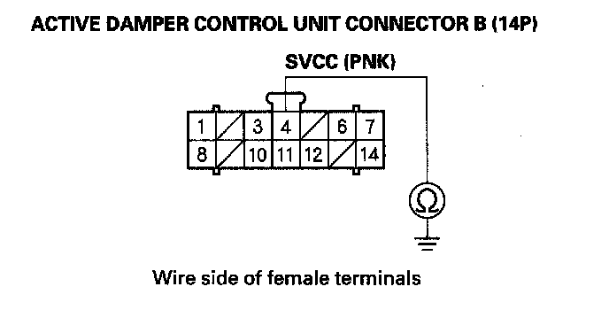
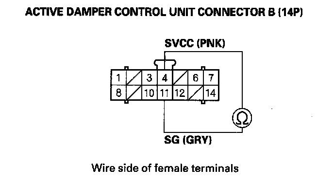

DTC 8-2
DTC 8-2: Sensor Reference Voltage Malfunction (SVCC Line)1. Turn the ignition switch ON (II).
2. Clear the DTC with the HDS.
3. Turn the ignition switch OFF.
4. Start the engine, and wait 5 seconds.
5. Check for DTCs with the HDS.
Is DTC 8-2 indicated?
YES - Go to step 6.
NO - Intermittent failure at this time. Check for poor or loose connections between the vertical acceleration sensor, the suspension stroke sensor, and the active damper control unit.
6. Clear the DTC with the HDS.
7. Turn the ignition switch OFF.
8. Disconnect the right-front suspension stroke sensor 3P connector.
9. Start the engine, and wait 5 seconds.
10. Check for DTCs with the HDS.
Is DTC 8-2 indicated?
YES - Go to step 11.
NO - Replace the right-front suspension stroke sensor.
11. Clear the DTC with the HDS.
12. Turn the ignition switch OFF.
13. Disconnect the right-rear suspension stroke sensor 3P connector.
14. Start the engine, and wait 5 seconds.
15. Check for DTCs with the HDS.
Is DTC 8-2 indicated?
YES - Go to step 16.
NO - Replace the right-rear suspension stroke sensor.
16. Clear the DTC with the HDS.
17. Turn the ignition switch OFF.
18. Disconnect the front vertical acceleration sensor 3P connector.
19. Start the engine, and wait 5 seconds.
20. Check for DTCs with the HDS.
Is DTC 8-2 indicated?
YES - Go to step 21.
NO - Replace the front vertical acceleration sensor.
21. Clear the DTC with the HDS.
22. Turn the ignition switch OFF.
23. Disconnect the right-rear vertical acceleration sensor 3P connector.
24. Start the engine, and wait 5 seconds.
25. Check for DTCs with the HDS.
Is DTC 8-2 indicated?
YES - Go to step 26.
NO - Replace the right-rear vertical acceleration sensor.
26. Clear the DTC with the HDS.
27. Turn the ignition switch OFF.
28. Disconnect the left-rear vertical acceleration sensor 3P connector.
29. Start the engine, and wait 5 seconds.
30. Check for DTCs with the HDS.
Is DTC 8-2 indicated?
YES - Go to step 31.
NO - Replace the left-rear vertical acceleration sensor.
31. Turn the ignition switch OFF.
32. Disconnect active damper control unit connector B (14P).
33. Check for continuity between body ground and active damper control unit connector B (14P) terminal No. 4.

Is there continuity?
YES - Repair short to body ground in the wire between the right-front/right-rear suspension stroke sensors, the front/right-rear/left-rear vertical acceleration sensors, and the active damper control unit.
NO - Go to step 34.
34. Check for continuity between active damper control unit connector B (14P) terminals No. 4 and No. 11.

Is there continuity?
YES - Repair short in the wires.
NO - Replace the active damper control unit.